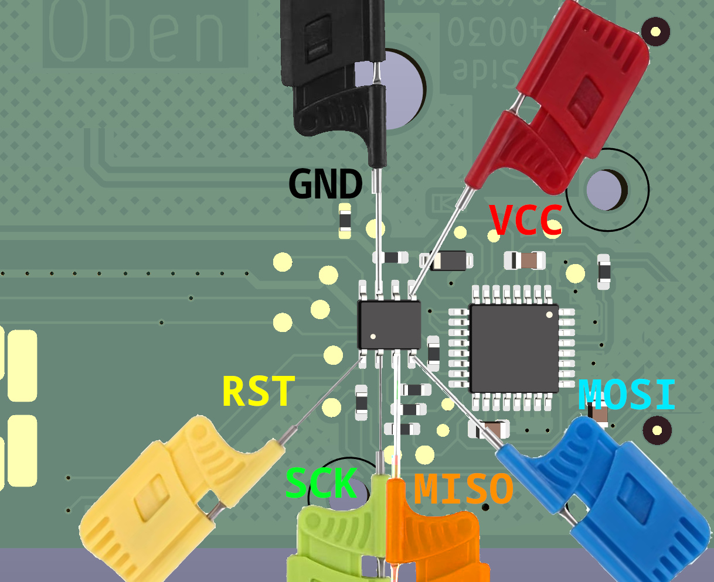

ZLK EEPROM Builder
Die Zulassungskarte muss zur Zulassungsnummer der Maschine passen.
Manchmal stimmen die Nummern außen auf dem Gerät nicht.
Am besten die Nummer vom Ausdruck oder aus dem Menü auslesen.
Die passende Zulassungskarte hat die Teilenummer 3240/003001
Für eine Hobbykarte 999999999 als Zulassungsnummer eingeben
Ungültige Zulassungsnummer.
Bitte wählen Sie eine Maschine aus.

Funktioniert nicht? Melden
Zurück